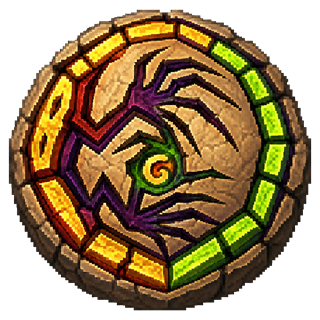

M1: 地形生成+描画+破壊テスト(タップでクレーター)
ランキング用の名前
12文字まで。あとから変更できます。
やめる
決定
ONLINE BATTLE
部屋ID
ロビーを退出
退出する
やめる
タイトルへ戻る

そのまま対戦相手を待てます。部屋IDを使いたい時だけ設定を開いてください
見間違いを防ぐため
I・O・1・0
は使いません
部屋を作る
部屋に入る
10手番
15手番
20手番
1 vs 1
2 vs 2
標準ステージ
大型ステージ
カスタムステージを選ぶ
YOUR MONSTER
通信を準備します。通信できない時もCPU・演習は遊べます。
準備完了
対戦開始
このまま再戦
ロビーへ戻る
すぐ対戦する
部屋IDを使う
カタモンを閉じる？
今はここまでにする？
終了すると、カタモンを閉じます。
このまま遊ぶ
いまの画面へ戻る
アプリを閉じる
カタモンを終了する